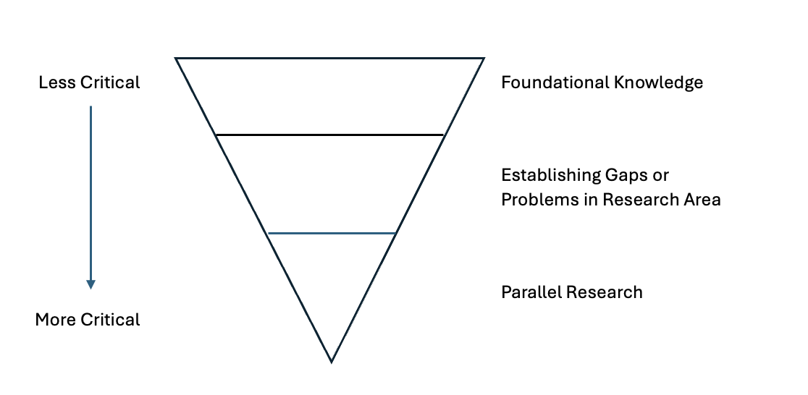

I have been guided by Clara that the literature review process should seek to provide three different kinds of information

One of the slides that Clara shared with us to explain about the different kinds of information to look out for when doing a literature reviewBased on my most recent rambling, I am facing critical issues with selection of SIM type and what principles should I rely on to guide my editing of GTFS in order to simulate different improvement scenarios -- this would be about Parallel Research. Additionally, I have not developed a full and thorough case for shifting the debate about accessibility to one based on OD data and predicted demand from SIM instead of just 'total number of people/total number of opportunities accessibile' -- this would be about Establishing Gaps. Lastly, I need to build a case on whether I should frame my dissertation as a matter of 'injustice' or just 'inequality', which I can do if I go for papers that can inform me about Foundational Knowledge
Papers about Transport Justice and Inequality, and about the Basics of Spatial Interaction Modelling
Papers about Applications of Transport Justice and Inequality, mostly centred about the Access to Jobs but could be about Access to other Facilities/Infrastructure
Papers that I will use to inform and/or justify my methods. This may be collapsed with 'Establishing Gaps' if a lot of the papers that are useful for me to refer to are also papers that I can criticise
I should also use this as a base to include citations that are NOT references (the datasets, r5py) so that i do not miss out on any of them when writing
my paper proper. I will update this section in due time!
Meanwhile, the following are the list of things that I have found but have not read so I need to read and then decide if it is useful or not for the
literature review!